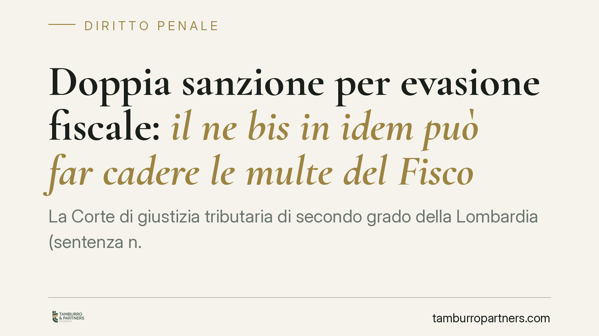

Doppia sanzione per evasione fiscale: il ne bis in idem può far cadere le multe del Fisco
La Corte di giustizia tributaria di secondo grado della Lombardia (sentenza n. 1586/2026) ha annullato le sanzioni amministrative irrogate dal Fisco a un imprenditore già condannato in sede penale per frode fiscale. Il motivo: la punizione complessiva risultava sproporzionata. Un precedente che tocca chiunque affronti un doppio binario, penale e tributario, per gli stessi fatti.

Il fatto
Un imprenditore era stato condannato in sede penale per frode fiscale, uno dei reati previsti dal D.lgs. 74/2000. Parallelamente, l'Agenzia delle Entrate gli aveva irrogato le sanzioni amministrative tributarie collegate alla medesima evasione.
Due procedimenti distinti, due apparati sanzionatori, un unico fatto storico. L'imprenditore ha impugnato le sanzioni amministrative. La Corte di giustizia tributaria di secondo grado della Lombardia gli ha dato ragione, annullando le multe fiscali ma confermando l'obbligo di versare imposte e interessi.
È una distinzione decisiva, su cui torneremo: il recupero del tributo non è una sanzione, è il pagamento di ciò che era dovuto.
Inquadramento normativo
Il principio applicato è il ne bis in idem, cioè il divieto di essere giudicati o puniti due volte per lo stesso fatto. È sancito dall'art. 4 del Protocollo n. 7 alla Convenzione europea dei diritti dell'uomo (CEDU).
La questione nasce dal cosiddetto *doppio binario*: in Italia la stessa evasione può generare, da un lato, un procedimento penale (D.lgs. 74/2000) e, dall'altro, un procedimento sanzionatorio amministrativo gestito dall'Agenzia delle Entrate. Per anni i due binari hanno corso in parallelo senza interferenze.
La Corte europea dei diritti dell'uomo, a partire dai casi *Grande Stevens* e *A e B contro Norvegia*, ha chiarito che le sanzioni tributarie amministrative, quando sono afflittive e di importo elevato, hanno natura sostanzialmente penale. Di conseguenza, cumularle con una condanna penale per gli stessi fatti può violare il ne bis in idem.
Il criterio non è automatico. La CEDU ammette il doppio binario a due condizioni: che i due procedimenti siano connessi in modo sufficientemente stretto (nel tempo e nella sostanza) e, soprattutto, che la sanzione complessiva risulti proporzionata. È proprio il test di proporzionalità il cuore della sentenza lombarda.
Implicazioni pratiche
Per il contribuente il messaggio è chiaro ma va maneggiato con cautela.
Primo: una condanna penale già intervenuta non cancella da sola le sanzioni fiscali. Serve dimostrare che la somma delle due punizioni supera la misura ragionevole rispetto alla gravità del fatto.
Secondo: il giudice tributario valuta caso per caso. L'entità della pena penale, l'importo delle sanzioni amministrative, le circostanze della condotta e l'eventuale pagamento del dovuto entrano tutti nel bilanciamento. Non esiste una soglia fissa.
Terzo, e più importante: cadono le sanzioni, non il tributo. Imposte evase e interessi restano integralmente dovuti. Chi legge la notizia come un condono si espone a un errore grave. Il ne bis in idem protegge dalla doppia *punizione*, non dall'obbligo di pagare ciò che si doveva allo Stato.
La sentenza vale per la Lombardia e non costituisce un orientamento consolidato a livello nazionale. È un precedente autorevole, ma la Cassazione e le altre Corti territoriali possono discostarsene. Va quindi usata come argomento difensivo, non come certezza.
Cosa fare in concreto
- Ricostruite la cronologia dei due procedimenti. Verificate date, importi e stato di penale e tributario: il ne bis in idem si valuta sul rapporto tra i due.
- Quantificate la punizione complessiva. Mettete a confronto pena penale e sanzioni amministrative per misurare la proporzionalità rispetto alla condotta contestata.
- Impugnate le sanzioni nei termini, deducendo espressamente la violazione dell'art. 4 Protocollo n. 7 CEDU e richiamando la giurisprudenza europea.
- Mettete in conto imposte e interessi. Pianificate il pagamento del tributo a prescindere dall'esito sulle sanzioni: quel debito non si estingue con il ne bis in idem.
- Valutate il profilo penale e tributario insieme. Le due difese devono dialogare: scelte fatte in un procedimento incidono sull'altro.
Il doppio binario sanzionatorio resta uno dei terreni più tecnici del diritto tributario. Consigliamo di affrontarlo con una strategia unitaria fin dalle prime fasi, evitando di gestire penale e fiscale come compartimenti separati.
---
*Contributo informativo a cura di Tamburro & Partners - Avv. Giuseppe Tamburro. Non costituisce parere legale.*
Ogni condominio ha una storia a sé.
Se gestisci un'amministrazione e vuoi un confronto su una specifica questione condominiale, scrivi allo studio. Ti rispondiamo entro un giorno lavorativo.